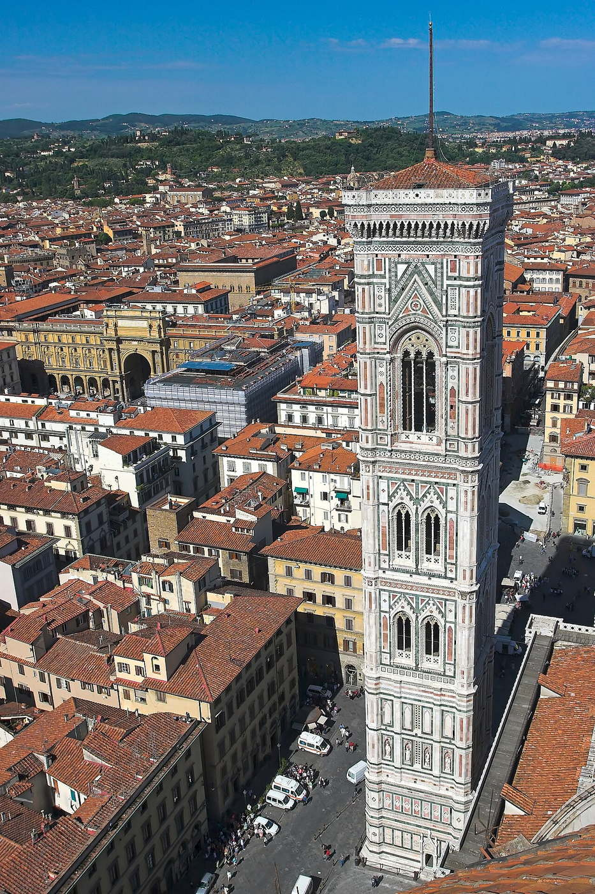

Historical and reference coats of arms


Florence
Guide. Places in this edition: 36.
OTIUM is the practice of deliberate leisure. In the classical sense, otium is not escape from work but time when attention returns to memory, landscape, and thought — without a utilitarian deadline.
We shape routes for lingering, not for checklist tourism. The goal is presence in a place rather than consumption of sights.
OTIUM is not a tour operator. It is an invitation to walk, pause, and leave a route unfinished if the light on a façade deserves another minute.
Historical and reference coats of arms
Guide. Places in this edition: 36.

Miracle-working Annunciation image draws ex-votos; Innocenti façade across square completes the humanist frame. Giambologna bronze center of equestrian Ferdinando I faces church. Hospital degli Innocenti by Brunelleschi balances the north side.
Servite miracle cult met Medici dynastic birthday celebrations in uniform architecture. First synchronous Renaissance square composition in Florence.

Medici chapels include Michelangelo New Sacristy sculptures; the Laurentian Library entrance stair shocks nearby. Parish church of the Medici before ducal power. Rough stone west front was never dressed in marble as planned.
Cosimo the Elder financed Brunelleschi interventions; popes and bankers enlarged burial display. Architectural index of Medici taste from sober brick to mannerist marble.

Pantheon of Italian genius: tombs of Michelangelo, Galileo, Machiavelli, and Rossini line the nave. Franciscan rival to Dominican Santa Maria Novella across town. Flood of 1966 heavily damaged Cimabue crucifix; conservation became a model.
Patrician families competed in side chapels with fresco cycles by Giotto school artists. Moral center for civic humanism and memorial sculpture.

Masaccio and Masolino Expulsion and Tribute Money revolutionized narrative depth; ticketed timed visits. Fire 1771 destroyed much nave; chapel survived as study piece. Filippino Lippi completed chapel after Masaccio's death.
Merchant Brancacci commissioned humanist salvation stories for a family chapel. Art-history classrooms cite these walls for linear perspective birth.

Pure proportioned geometry; Saturday market and aperitivo life fill the sleepy piazza outside. Michelangelo dissected corpses in convent cells borrowed nearby. Crucifix attributed to youthful Michelangelo.
Augustinian house rebuilt after fire with mathematic calm in plan and pietra serena lines. Brunelleschi's spiritual architecture at human scale in the artisans' quarter.

Caves, grottoes, twin-ram fountains, and long cypress alleys model princely absolutism on a slope. Buontalenti Grotto and Ammannati Neptune basin are highlights. Linked to Forte Belvedere for military sightlines.
Medici wives and gardeners imported citrus and hydraulics from villa tradition. Open-air sculpture gallery influencing European court gardens.

CampanileGiotto-01 is a places of worship in Florence. Photo tags: florence, italy, panorama, city. Reference image context: https://pixabay.com/photos/florence-italy-panorama-city-5473716/.
Public photo archives associate this site with: florence, italy, panorama, city. Worth a stop when exploring Florence.

Models, drawings, and juvenilia include Battle of the Centaurs relief; research library upstairs. Michelangelo bought adjacent lots but did not build this exact façade. Nephews turned family prestige into public memorial institution.
Legal battles over Michelangelo estate echo in what survived the workshop fire risk. Most intimate Florentine stop for Michelangelo paper and marble beginnings.

Florentines still argue if Dante's noble ancient temple stood here; mosaics crown the octagon interior. Lorenzo Ghiberti east doors (replicas outside, originals in museum). Mosaic cupola includes Last Judgment tiers ascending overhead.
Every citizen-notable baptism occurred here until the cathedral font moved indoors later. Biblical storytelling in bronze relief defined public competition for artists.

Santa Maria del Fiore anchors the religious heart of Florence; climb the dome or Giotto campanile for tight views over tiles and terracotta. Brunelleschi engineered the dome without centering using herringbone brick. The exterior gained its polychrome marble cladding over centuries.
Competition and faction among guilds shaped the vast ship-hull nave; Medici patronage later intertwined with republican ritual. Structural emblem of the Renaissance and the Tuscan skyline.

FlorenceBank is a museums in Florence.

Sea god and satyrs wrestle sea monsters at the civic heart; restaurateurs ring the piazza. Mocked as white giant on unfinished block in its day. One of several copies of Perseus head spout stories in Cellini memoirs.
Cosimo I maritime propaganda and marriage alliance symbolism wet the stone. Humid counterweight to dry equestrian absolutism meters away.

Michelangelo's David dominates; unfinished slaves flank; musical instrument collection is a quiet bonus. David moved from Piazza Signoria to protect marble from weather. Long lines—reserve entry to avoid heat and crowds.
Grand Duke Pietro Leopoldo founded an art school collection; 19th c. nation-building made David civic icon. Single best encounter with Michelangelo giant scale in situ.

Cellini Perseus and Giambologna Rape of the Sabines crowd marble under triple arches—open-air free museum. Begun after union riots as ceremonial guard space. Medici dukes used it for investitures and public display.
Republican meeting point absorbed triumphal statuary programs of principate. Sculpture syntax for the entire square's political allegory.

Ground floor produce stalls; upstairs food court and cooking classes; wraps traditional San Lorenzo street leather market. Part of Florence capital renewal and rail-era hygiene reform. Recent redevelopment added evening gastonomy without losing vendors.
Grand-ducal open markets moved under cover as population density rose. Working culinary heart behind the tourist leather arcades.

Mosque, Canton is a places of worship in Florence. Photo tags: sultan qaboos grand mosque, oman, nutmeg, main mosque. Reference image context: https://pixabay.com/photos/sultan-qaboos-grand-mosque-oman-5963726/. Public photo archives associate this site with: sultan qaboos grand mosque, oman, nutmeg, main mosque.

Telescopes, globes, and Medici scientific instruments next to the Arno; interactive demos for families. Holds Galileo's finger relic alongside real calculation tools. Merger of Istituto e Museo di Storia della Scienza rebranded Museo Galileo.
Tuscan court science collided with ecclesiastical trial memory in collecting choices. Premier Italian museum for early modern instruments and optics.

Donatello bronzes, Michelangelo Bacchus, and maiolica rooms pack the old police headquarters. Captain of the People and later Bargello magistrate held court here. Sculpture competition pieces with the cathedral buttresses stored conceptually here.
Duke suppression of republican militia repurposed jails into Italy's first national sculpture museum. Donatello scholarship begins in these vaulted rooms.

Vespucci and Botticelli tombs; Ghirlandaio Last Supper refectory (separate booking) nearby in complex. Umiliati order church before Vallombrosan observance. Americas name echo in Amerigo Vespucci chapel memorial.
Wool guild and admirals' families patronized this Lungarno spiritual anchor. Harbor edge spirituality linking mercantile risk to mendicant vows.

Once open market hall; guild statues by Donatello, Ghiberti, and Verrocchio ring exterior niches. Madonna delle Grazie altarpiece still venerated inside. Each trade guild sponsored a patron saint figure.
Miracle image and civic famine control merged commerce and cult in the street grid. Outdoor sculpture museum of quattrocento Florence between banks.

Cappella dei Magi frescoes by Benozzo Gozzoli process along the intimate chapel; courtyard evokes Roman oeci. Cosimo the Elder chose restrained scale before Pitti ambitions. Later Riccardi family added stucco Galleria and mirror hall.
Prototype for Florentine palace typology: corner rusticate, cortile, grand salone stack. Medici power before they became dukes, readable in stone.

Royal and ducal apartments, treasury collections, and fashion exhibitions face the Boboli amphitheater slope. Elevation originally three bays until Eleonora di Toledo bought it. House museums include Palatine Gallery and Argenti.
Renaissance merchant scale absorbed into grand-ducal court ritual with Italian terrace-garden design. Counter-pole to the civic north bank; defines Oltrarno court life.

Rusticated stone courses and paired windows frame blockbuster temporary exhibitions and courtyard café. Filippo Strozzi returned from exile seeking competitive Medici scale. Corner facing Via dei Tornabuoni was never fully finished.
Private palace warfare on street frontage between banking clans. Strolling link between Duomo axis and Tornabuoni luxury retail.

Town hall of Florence houses the Salone dei Cinquecento and secret studiolo; the replica David marks the entrance. Arnolfo di Cambio credited with the severe stone masses. Savonarola's Bonfire of the Vanities burned in this square.
Seat of the Signoria then Grand Dukes; Michelangelo hid briefly here during siege fears. Political theater of republican memory beside ducal magnificence.

Cosimo Giambologna equestrian monument, Ammannati Neptune fountain, and copies flank the civic palace door. Savonarola executed and burned here in 1498. Michelangelo's David stood near the entrance until removal to Accademia.
Site of people's assemblies and ducal spectacle; L-shaped horn toward the Arno is Vasari's stroke. Florence's political unconscious carved in marble and bronze.

Shaded benches and children's play offer neighborhood quiet east of the medieval wall trace. Named for Piedmontese patriot Massimo d'Azeglio. Surviving villas recall when English travelers wintered in this quarter.
Capital-era ring boulevards carved new bourgeois fabric beyond renaissance centro. Everyday Florence off the David-to-Boboli conveyor belt.

Bus, taxi, or stiff walk up; dawn and dusk pack photographers over the Duomo, Palazzo Vecchio, and bridges. Designed by Giuseppe Poggi as part of Florence capital moment. Bronze David is a cast, not Michelangelo's marble original.
Urban promenade ideology met Medici villa slopes above San Miniato. Default postcard angle for the entire historic basin.

Elegant springing lines frame views back to Ponte Vecchio; seasonal high water still threatens. War demolition by retreating forces required meticulous stone-by-stone restoration. Statues of seasons by Renaissance masters (some copies on bridge).
Grand duke wanted harmony with new river embankment planning. Graceful counter-rhythm to the shop-crowded old bridge upstream.

Goldsmith shops replaced butchers to please Grand Ducal noses; sunset gold on the water is a classic shot. Only central Florentine bridge spared in 1944 retreat demolitions. The Vasari Corridor links Palazzo Vecchio to Palazzo Pitti overhead.
Roman river crossing evolved into a defended commercial spine of the Oltrarno guild economy. The postcard face of Florence and a working pedestrian thoroughfare.

Fra Angelico frescoed cells for Dominican brothers; Savonarola's cell and relics occupy another wing. Cosimo de' Medici financed reform house austerity architecture. Annunciation at stair landing greets ascending visitors.
Humanist-platonist circle met here before Savonarola's moral dictatorship. Museum of contemplative painting at domestic scale.

Olivetan monks maintain vespers with polyphony; cemetery and views rival the busier terrace below. Green and white marble banding echoes Baptistery vocabulary uphill. Michelangelo briefly hid in caretaker lodging during siege.
Martyrdom legend of Miniato drew pilgrimage above the Roman walls. Finest Romanesque church skyline in Florence with panorama bonus.

Dominican preaching church with Masaccio Trinity and Spanish Chapel fresco cycles near the station. Green and white marble geometry unifies classical detail with basilican nave. Train travelers meet the piazza as first monumental space in town.
Humanist patronage paid for Alberti's harmonic façade proportions on older fabric. Theology, optics, and perspective meet in trecento wall painting here.

Thousands of European and Islamic arms, cavalcade mannequins, and British country-house tea rooms. Frederick Stibbert inherited Anglo-Florentine banking fortune. Park bus access easier than stiff hillside walk.
Private passion collection became public museum on Anglo-Florentine social ridge. Oddball antidote to sacral Renaissance itineraries.

Maggio Musicale Fiorentino orchestra and chorus; parking and new auditorium replaced scattered venues. Hadid design added corkscrew circulation and vineyard terraces metaphorically. Biennial tradition of high-summer opera premieres continues.
Flood-damaged old communale theater and logistics pushed a detached north site solution. Major contemporary music architecture for a historic opera city.

Narrow stairs and timed groups reach the beacon cage; not for claustrophobia or small children tiring. Named for palace architect Arnolfo di Cambio tradition. Guards watched rural towers for noble revolt signals.
Medieval height race symbol still pierces the skyline between Duomo and church towers. Only central tower climb pairing city hall power with aerie panorama.

Corridors overlooking the Arno hold Botticelli rooms, Raphael, and Titian; book timed entry in peak season. Begun as judiciary and guild offices framing a tight horseshoe. Medici collections formed the core of the Italian public art museum idea.
Cosimo I ordered a perspectival stage-set linking piazza and river; later grand-princely galleries opened by demand. Reference collection for trecento-to-Baroque painting in Italy.